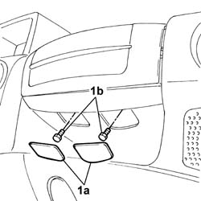
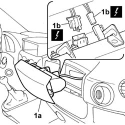
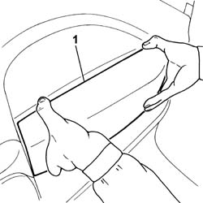

5580C22 AIR BAG MODULE - Passenger side - R.R.
- Path
- Procedures > 55 ELECTRICAL EQUIPMENT > 5580 SPECIAL ACCESSORIES > 5580C air bag system > 5580C22 AIR BAG MODULE - Passenger side - R.R.
- Kind
- repair procedure (removal / refitting; the operation number is the code)
- Applies to
- all engines; all production periods
- Interactive page
- https://sloeber94.github.io/elrnDB-fDbl/en/#/2584972
Applies to: all engines; all production periods
Applies to: all engines; all production periods
 Removing
Removing
 Refitting
Refitting1. Prise up fastener covers (1a) and unscrew bolts (1b) securing the airbag module.

Applies to: all engines; all production periods
1. Remove airbag module (1a) from its seat in order to disconnect electrical connectors (1b).
Name | Connector | |
|---|---|---|
1b | Air Bag in dashboard (passenger side) |

Applies to: all engines; all production periods
Place the Air Bag module in the special cupboard, resting it on a free surface with the bag facing upwards.
Applies to: all engines; all production periods
Refitting
RemovingIf a new Air Bag module is being fitted, attach the appropriate labels.
Detach the removable part of the adhesive label from the new module and put it in a specific file recording the vehicle details (model, registration data, chassis no.) and the serial no. of the old module. This file should be kept for future checks.
A new label is supplied together with the module to be stuck on top of the existing one. However, it should first be perforated to indicate the month and 10 years after the year when the module is fitted (e.g. 2009 will correspond to 1999).
Position the airbag module and connect the electrical connectors.
 | Name | Connector |
|---|---|---|
- | Air Bag in dashboard (passenger side) |
1. Fit the airbag module in its seat and secure with bolts.

Applies to: all engines; all production periods
Fit the fastener covers in their seat.
Connect the battery leads.
Check system operation using an Examiner.